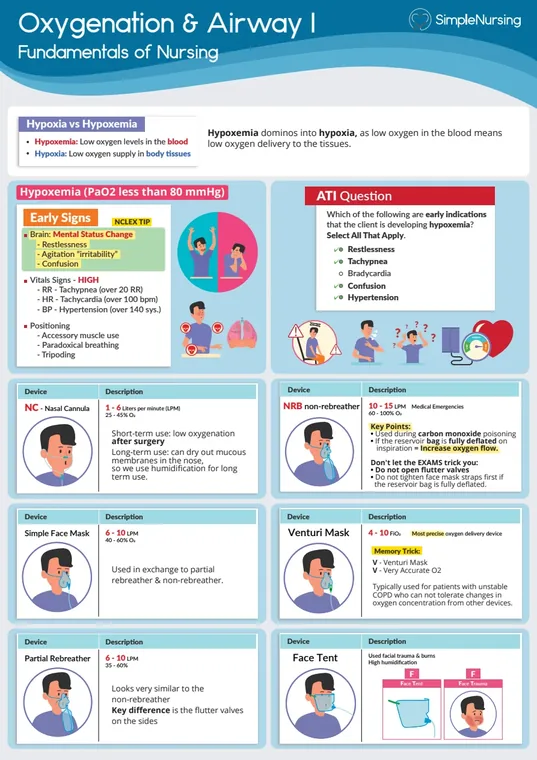
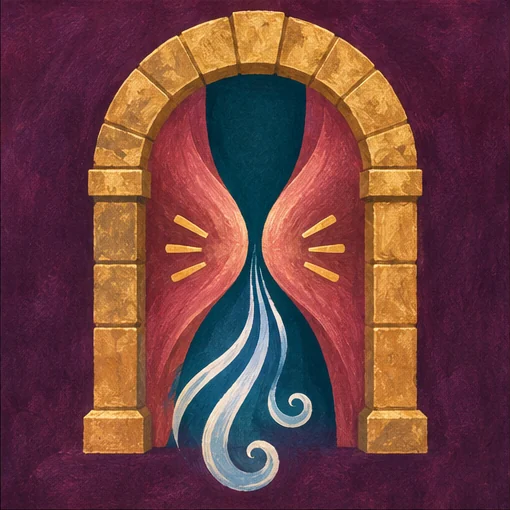
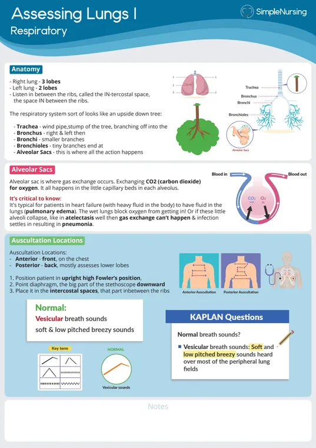
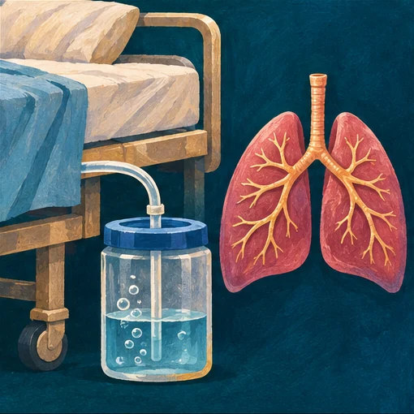
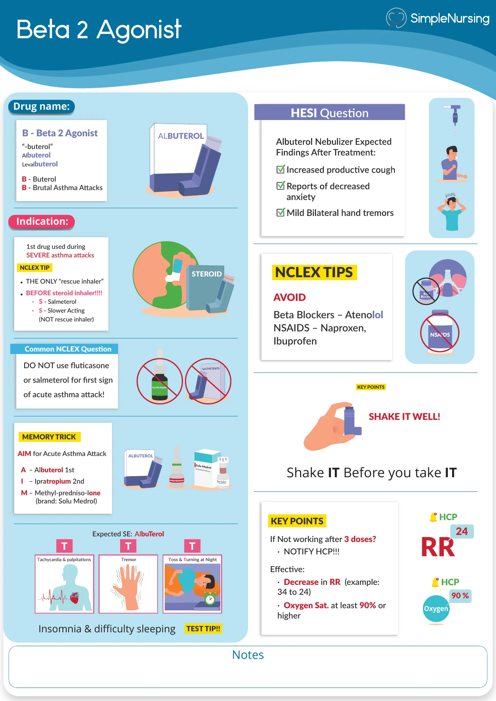
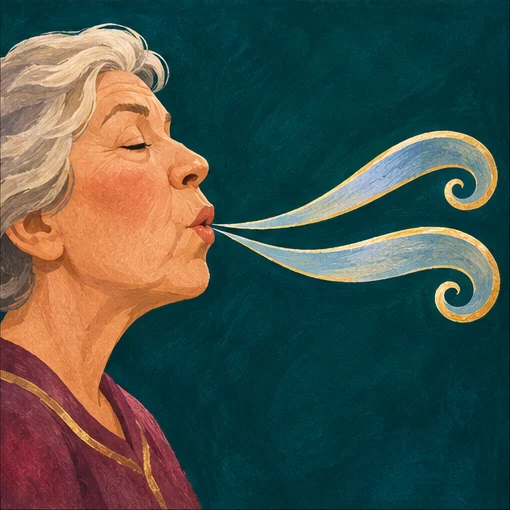

Which needs faster escalation, new stridor at rest or isolated nasal congestion?
- Think…
- New stridor can signal a threatened airway.
NUR 198 · Exam 2 · Simple exam guide
Modules 4–6

Separate an upper-airway sound from a lower-airway sound and notice when the effort to breathe increases despite less noise.






A. Activate urgent airway support and assess breathing.
Stridor and difficulty speaking can indicate a threatened upper airway.
C. Ventilation may be failing and help is needed urgently.
Quiet breath sounds with drowsiness can reflect fatigue and dangerously limited airflow.